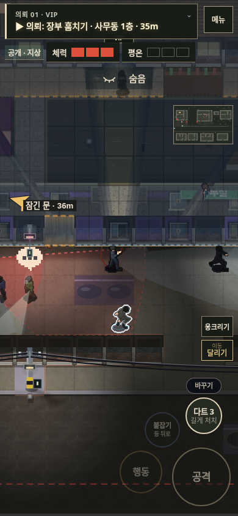
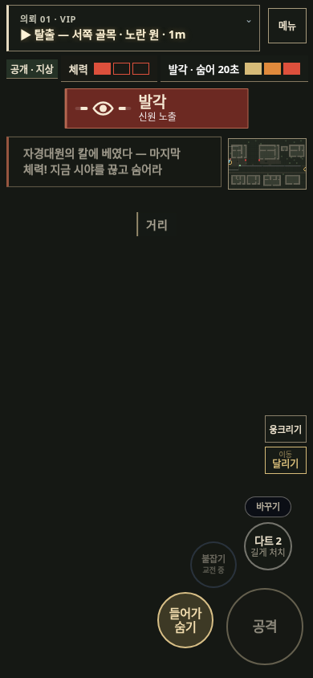
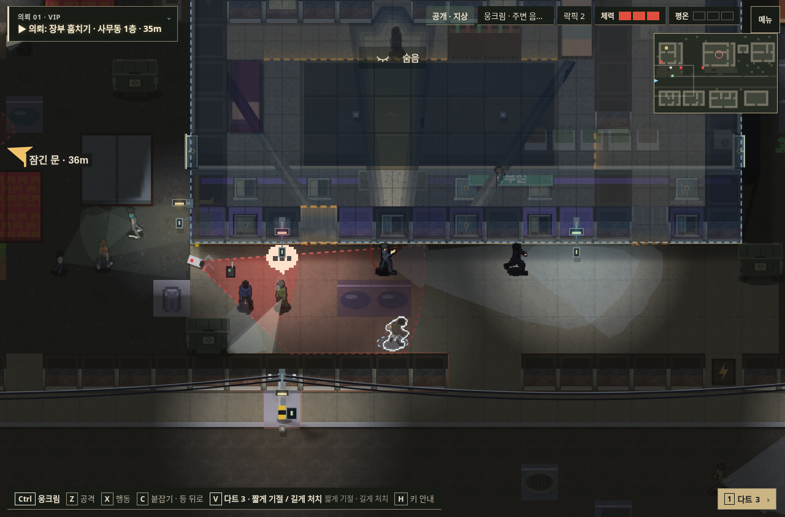
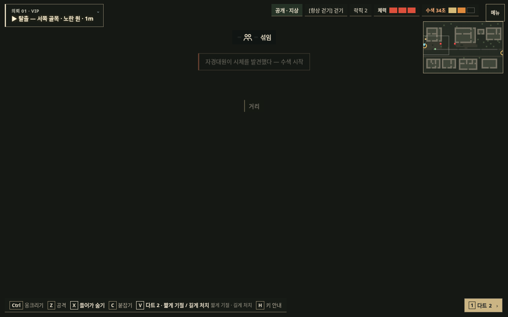

VIP 의뢰 개선
흡연 때는 호위가 입구를 지키고, 기회를 놓치면 다음 방문을 노릴 수 있습니다. 식당 동선을 정리하고 서쪽 골목으로도 탈출할 수 있게 했습니다.
게임 실행 · 기획·검증 기록
전체 AI 진행 결과
유인·변장 → 2층 메모 → 금고 장부 → CCTV 무력화 → 전화 매복 → 서쪽 탈출. 맵을 알고 계획한 자동화 검사이며 NPC·카메라·피해 판정은 계속 실행했습니다.
| 환경 | 완료 | 체력 | 발각 |
|---|
| PC | 3분 16초 | 3 | 0 |
| 모바일 | 3분 16초 | 1 | 3 |
모바일

표적 관찰
발각 후에도 목표를 마치고 탈출PC

